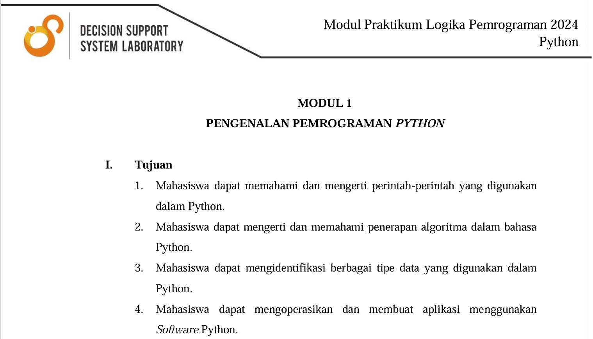
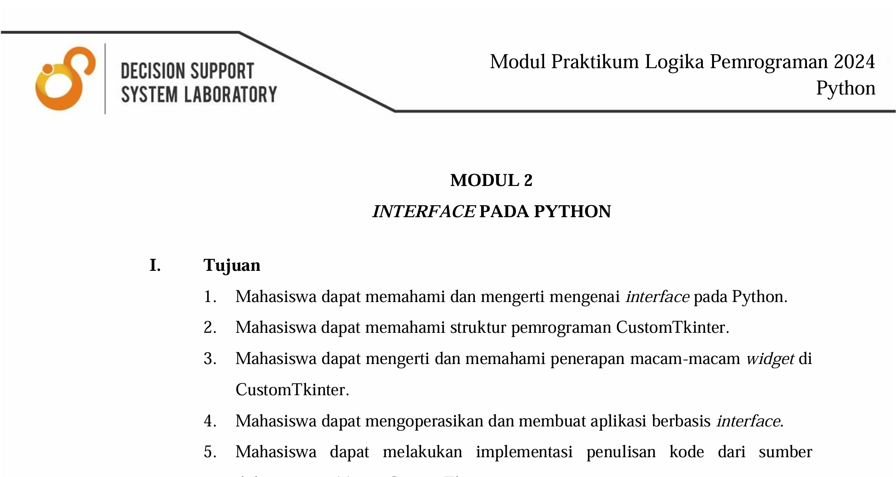
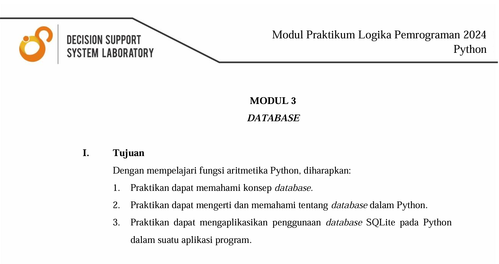
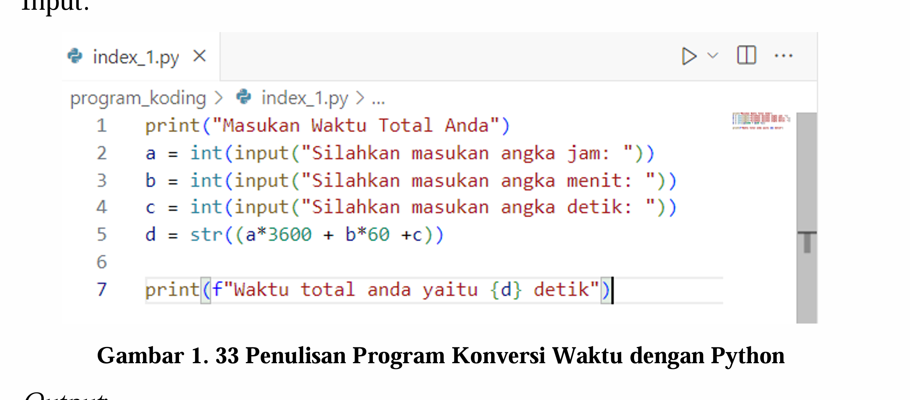
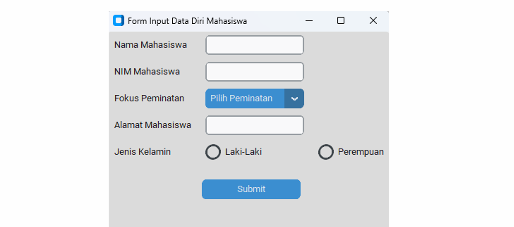
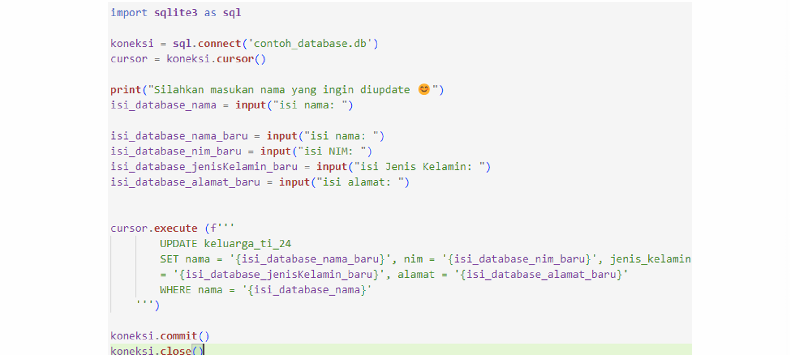
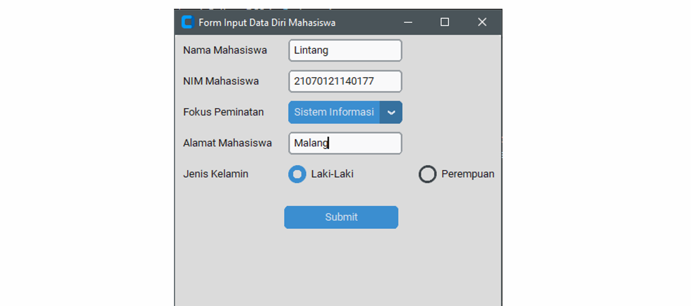
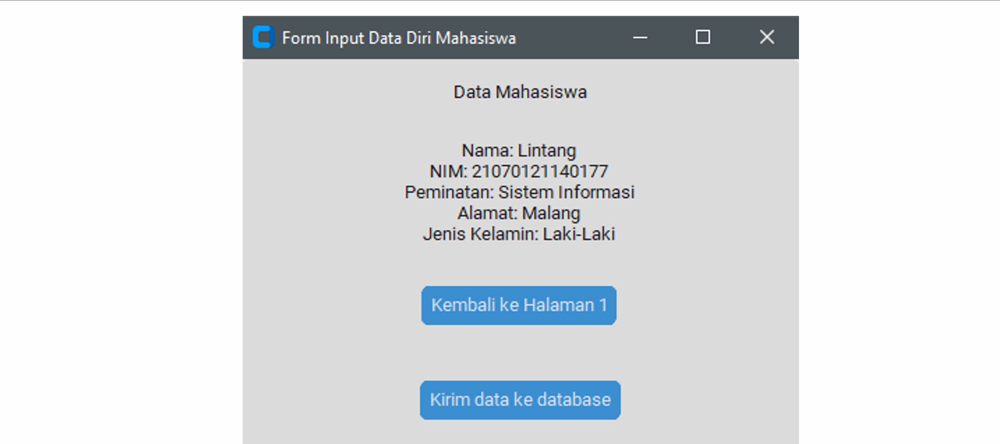
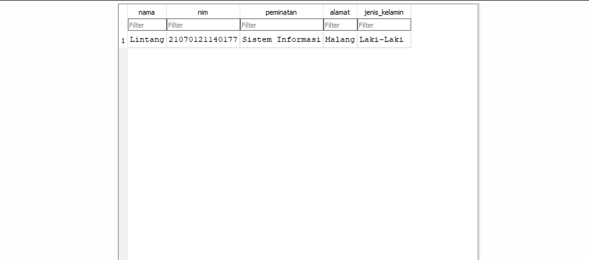
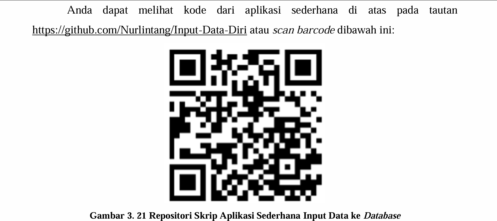

<div id="portfolio-page" class="portfolio-page-content">
    <div class="portfolio-page-wrapper">
        <div class="portfolio-page-nav">
            <div class="nav-item portfolio-page-prev-next">
                <a class="ajax-page-load" href="portfolio-project-trading.html"><i class="lnr lnr-chevron-left"></i></a>
                <a class="ajax-page-load" href="portfolio-project-website-tupen.html"><i class="lnr lnr-chevron-right"></i></a>
            </div>
            <div class="nav-item portfolio-page-close-button">
                <a id="portfolio-page-close-button" href="#"><i class="lnr lnr-cross"></i></a>
            </div>
        </div>

        <div class="portfolio-page-title">
            <h1>Pembuatan Modul Pembelajaran Praktikum Logika Pemrograman</h1>
        </div>

        <div class="row">
            <div class="col-sm-8 col-md-8 portfolio-block">
                <div class="owl-carousel portfolio-page-carousel">
                    <div class="item">
                        
                    </div>
                    <div class="item">
                        
                    </div>
                    <div class="item">
                        
                    </div>
                </div>

                 <div>
                    <p class="deskripsi-tambahan">
                        Modul ini disusun sebagai landasan pembelajaran bagi para praktikan serta sebagai acuan kerja bagi para asisten laboratorium. Dengan adanya modul ini, diharapkan proses pembelajaran dalam praktikum Logika Pemrograman menjadi lebih terstruktur dan mudah dipahami. Praktikan dapat menggunakan modul sebagai sumber utama dalam memahami materi dan mengerjakan tugas, sementara asisten dapat menjadikannya sebagai referensi dalam memberikan bimbingan serta menyusun penilaian. Penggunaan studi kasus dalam penyajian materi menjadikan proses pembelajaran lebih aplikatif dan relevan dengan kebutuhan dunia kerja.
                    </p>

                    <div class="owl-carousel portfolio-page-carousel">
                        <div class="item">
                            
                        </div>
                        <div class="item">
                            
                        </div>
                        <div class="item">
                            
                        </div>
                    </div>


                    <ol> 
                        <li><p class="deskripsi-tambahan">
                        Modul ini terdiri dari tiga bagian utama. Pertama, materi mengenai <b>dasar pemrograman Python</b> memberikan pengenalan terhadap sintaks dasar, tipe data, operasi logika, pengendalian alur program (seperti percabangan dan perulangan), serta penggunaan fungsi. Materi ini ditujukan untuk membangun fondasi logika pemrograman yang kuat bagi praktikan.
                        </p></li>

                        <li><p class="deskripsi-tambahan">
                        Pembelajaran mengenai pembuatan <b>antarmuka pengguna (UI/UX)</b> dengan menggunakan library CustomTkinter. Modul ini mengajarkan bagaimana membuat aplikasi Python yang interaktif dan menarik secara visual, serta mengenalkan berbagai komponen antarmuka seperti tombol, formulir input, dan navigasi antar halaman. 
                        </p></li>

                        <li><p class="deskripsi-tambahan">
                        Modul tentang <b>database dengan SQLite</b> mengajarkan bagaimana menyimpan dan mengelola data secara lokal. Praktikan akan memahami konsep dasar database, melakukan operasi CRUD (Create, Read, Update, Delete), serta mengintegrasikannya dengan antarmuka Python yang telah dipelajari di modul sebelumnya.
                        </p></li>
                    </ol>

                     <p class="deskripsi-tambahan">
                        Setelah mempelajari ketiga dasar dari pembuatan program aplikasi, praktikan akan mempelajari untuk integrasi ketiga ilmu tersebut. berikut adalah contoh aplikasi integrasi:
                    </p>

                    <div class="owl-carousel portfolio-page-carousel">
                        <div class="item">
                            
                        </div>
                        <div class="item">
                            
                        </div>
                        <div class="item">
                            
                        </div>
                        <div class="item">
                            
                        </div>
                    </div>

                    <p class="deskripsi-tambahan">
                        Sebagai saran perbaikan, modul ini dapat ditingkatkan dengan menambahkan lebih banyak latihan berbasis kasus nyata yang sesuai dengan konteks industri. Selain itu, penyempurnaan pada sisi dokumentasi teknis, seperti penjelasan kode yang lebih rinci dan pemberian alternatif solusi, juga akan sangat membantu praktikan dalam memahami logika di balik setiap implementasi. Penambahan akses ke platform pembelajaran daring atau integrasi dengan repositori GitHub untuk setiap modul juga akan meningkatkan efektivitas pembelajaran secara mandiri.
                    </p>
                </div>

                <script type="text/javascript">
                    jQuery(document).ready(function($){
                        $('.portfolio-page-carousel').imagesLoaded(function(){
                            $('.portfolio-page-carousel').owlCarousel({
                                smartSpeed:1200,
                                items: 1,
                                loop: true,
                                dots: true,
                                nav: true,
                                navText: false,
                                margin: 10,
                                autoHeight:true
                            });
                        });
                    });
                </script>
            </div>

            <div class="col-sm-4 col-md-4 portfolio-block">
                <!-- Project Description -->
                <div class="project-description">
                    <div class="block-title">
                        <h3>Description</h3>
                    </div>
                    <ul class="project-general-info">
                        <li><p><i class="lnr lnr-user"></i> Nurlintang Asriono Sudarmawan</p></li>
                        <li><p><i class="lnr lnr-link"></i> <a href="https://undipmail-my.sharepoint.com/:b:/g/personal/nurlintangas_students_undip_ac_id/ERCQw0g15UhLrkQYrg5Ug3kBJaNqmhbMB5hnJk_nrltrjA?e=1C0WhQ" target="_blank"> > Lihat modul disini</a></p></li>
                        <li><p><i class="lnr lnr-calendar-full"></i> 5 Oktober, 2024</p></li>
                    </ul>

                    <p class="text-justify">Pembuatan modul ini dilakukan untuk memenuhi kebutuhan kegiatan praktikum pada laboraturium Decision Support System. khusunya adalah praktikum logika pemrograman.</p>
                    <!-- /Project Description -->

                    <!-- Technology -->
                    <div class="tags-block">
                        <div class="block-title">
                            <h3>Technology</h3>
                        </div>
                        <ul class="tags">
                            <li><a>Word</a></li>
                            <li><a>Python</a></li>
                            <li><a>Excel</a></li>
                            <li><a>SQL</a></li>
                            <li><a>CustomTkinter</a></li>
                        </ul>
                    </div>
                    <!-- /Technology -->
                    
                     <!-- Skill -->
                    <div class="tags-block">
                        <div class="block-title">
                            <h3>Skill</h3>
                        </div>
                        <ul class="tags">
                            <li><a>Analytical Thinking</a></li>
                            <li><a>Problem Solving</a></li>
                            <li><a>Programming</a></li>
                            <li><a>Database Management</a></li>
                        </ul>
                    </div>
                    <!-- /skill -->
                </div>
                <!-- Project Description -->
            </div>
        </div>
    </div>
</div>
